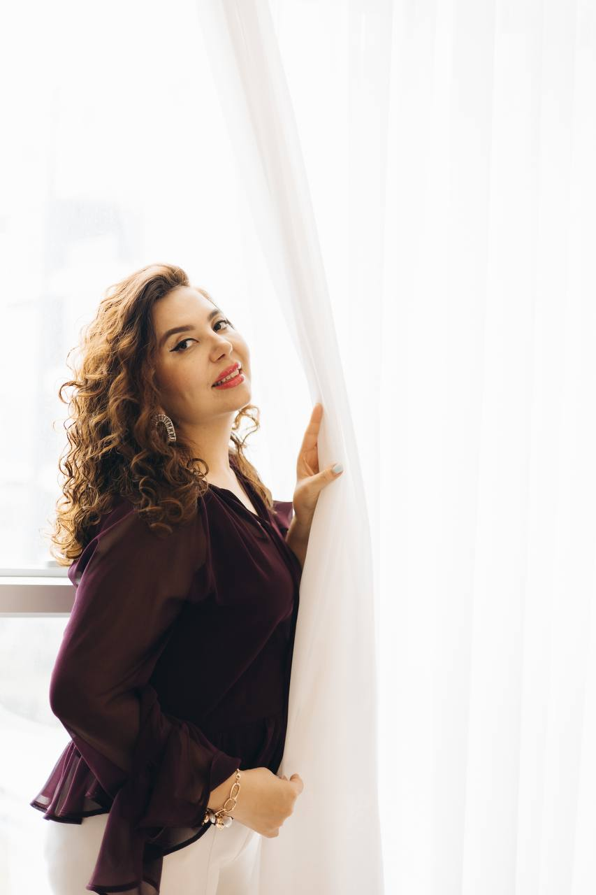

КОСМИК ШИФО АКАДЕМИЯСИ
Тана, руҳ ва онг мувозанати орқали ҳаётнинг тўлиқлигини ҳис этинг!
Грузиянинг энг гўзал шаҳарлари — Батуми ва Тбилисида бўлиб ўтади. Бу саёҳат шунчаки дам олиш эмас. Бу — ўзлигингизга қайтиш ва янги ҳаёт яратиш имкониятидир.
Грузия — ер ва сув энергиялари бирлашган, юқори вибрацияли маконлардан бири. Бу ерда тоғлар қудрати, денгиз енгиллиги ва табиатнинг сокин энергияси уйғунлашган.
Агар сиз қуйидагиларни хоҳласангиз — бу ретрит айнан сиз учун
7 та ноёб дастур орқали ички мувозанат ва ташқи уйғунликни топасиз
Профессионал Қалбшунос-Мастер Анадо EXales билан 5 соатлик жонли дарслар.
Авлоддан-авлодга ўтиб келаётган ички дастурлар билан ишлаш.
Мастернинг жонли энергиялари орқали онг кенгаяди.
Мовий денгиз, сарвқомат тоғлар ва яшил табиат қўйнида дам олиш.
Батуми ва Тбилиси шаҳарларининг ўзига хос муҳити.
Медитациялар, инициациялар ва сукут амалиётлари.
Денгиз шовқини ва руҳни енгиллаштирувчи кечки амалиётлар.
— Қалбшунос-Мастер
Профессионал қалбшунос ва энергия устаси. Минглаб одамларга ўзлигини топиш ва ҳаётини янги бошлашда ёрдам берган. Космик Шифо Академиясининг асосчиси.
Ҳар кун — янги тажриба, янги очилиш
Тбилисига ташриф, меҳмонхонага жойлашиш, танишув кечаси.
Анадо EXales билан биринчи жонли дарс ва медитация.
Эски шаҳар, муқаддас жойлар, миллий таомлар.
Чуқур ишлаш — авлоддан ўтган муаммоларни ҳал қилиш.
Денгиз бўйидаги шаҳарга трансфер. Янги муҳит.
Денгиз бўйида энергетик машқлар ва тозаланиш.
Мастернинг махсус сеанси — ҳаёт сценарийини янгилаш.
Кавказ тоғлари — табиатнинг қудратли энергияси.
Натижаларни қабул қилиш, янги мақсадлар қўйиш.
Сертификат тақдимоти, видолашув кечаси, учиш.
⏰ РЕТРИТГАЧА ҚОЛДИ
Жойлар чекланган — фақат 15 та ўрин!
Ички енгиллик
Руҳий хотиржамлик
Онг равшанлиги
Ўзига ишонч
Янги имкониятлар
Ҳаёт уйғунлиги
Энергетик янгиланиш
⚠️ Жойлар чекланган
Тушлик ва кечки овқат нархга киритилмаган
ЖОЙНИ БАНД ҚИЛИШРетрит билан бирга сизга совға қилинади
"Ўз йўлингни топ" электрон китоби
$50 қийматАнадо EXales томонидан ёзилган медитациялар
$100 қийматБитирувчилар билан умрбод алоқа
БебаҳоРетрит якунида ҳар бир иштирокчига махсус СЕРТИФИКАТ тақдим этилади
Ўзбекистон фуқароларига Грузия учун виза керак эмас. Фақат паспорт талаб қилинади.
Ҳа, албатта! Ретрит бошловчилардан то тажрибали кишиларгача — ҳамма учун мос.
Click, Payme, Uzcard, банк ўтказмаси ёки нақд пул орқали тўлаш мумкин.
Ҳа. Биринчи тўлов 1000$ — жойни банд қилиш учун. Қолгани ретритгача 1 ой олдин.
Албатта! Авиачипталар нархга киритилган — қаердан учишингиз муҳим эмас.
Қулай спорт кийим, медитация учун оқ кийим, чўмилиш либоси. Рўйхат рўйхатдан ўтгач юборилади.
18-28 июль кунлари Грузияда сиз билан бирга ўзликка қайтиш саёҳатига чиқамиз
Чексиз севги билан, Космик Шифо Академияси